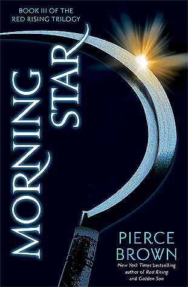

"Morning Star"
- Read on 2016-05-24
- Rating: ️️️️️
- Format: üéß (21 hours 50 minutes)
Had the second book not ended with a MAJOR PLOT TWIST that I obviously didn't see coming, and knowing this was the third/final book, I gave this book a shot. Not as graphic as the other books (though still plenty graphic/gory), this was the final conclusion to this trilogy. I _might_ revisit this series again in the future, but if so, it won't be for quite a while. In general, I don't think it was worth it. I'm trying to figure out what kept me coming back for these books. I think an element of it was the technology, and rooting for the main character. Knowing just how much the MAJOR PLOT TWIST style was used, I think I also wanted to see how the author would get us to the end. I just read that he's writing another trilogy taking place 10 years after this book ends. I won't be preordering it.
- Prior: Red Rising
- Next: Golden Son